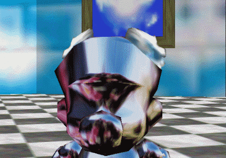

Super Mario 64 contains a unique metal wing texture intended to appear when Mario picks up both the Wing Cap and the Metal Cap power-ups at the same time. This is not normally possible in-game as those power-ups never appear together in the same stage. However, we are able to view Mario in this state with a GameShark code.